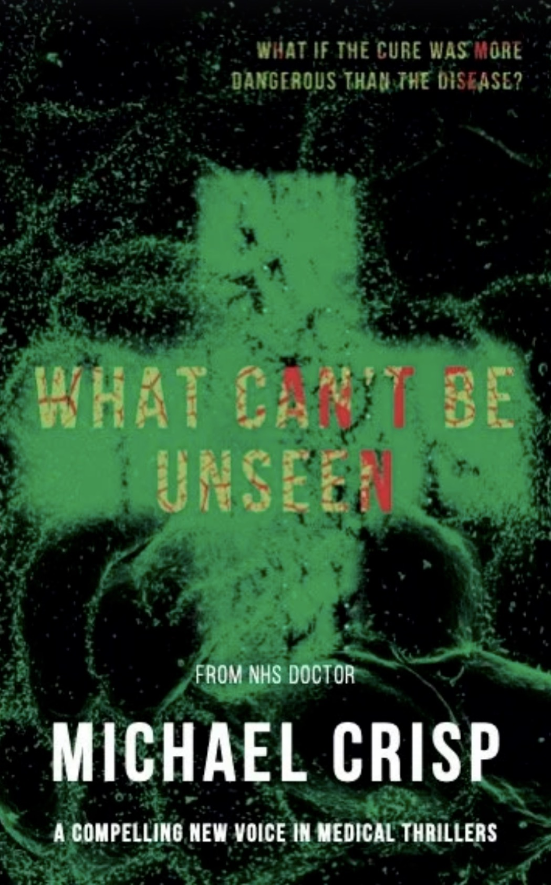

Real clinical insight
Written by a working NHS doctor — the medicine, the pressure and the corridors all ring true.
A James Harland Thriller — Book 1
What if the cure was more dangerous than the disease?

The Story
“What if someone discovered a painkiller that worked perfectly — no addiction, no side effects? And what would they do to the people in the way of making it?”
What Can't Be Unseen opens on the worst night of Dr James Harland's career. A brilliant NHS physician, he fails to save a young migrant woman in a London emergency department — and when toxicology reveals an unknown pharmaceutical compound in her blood, the questions won't let him go.
What follows pulls Harland into a world of organised crime, illegal drug testing and political conspiracy. It's a thriller with its foot on the accelerator — but underneath the pace are deeply human stories, drawn from nearly twenty years on the wards, about the people medicine sees and the people it overlooks.
The Books
The James Harland series, plus what's coming next.
Why readers are drawn in
Written by a working NHS doctor — the medicine, the pressure and the corridors all ring true.
Rich, observed characters gathered over decades on the wards — not all miserable, often surprising.
Big, current questions — drugs, money and power — tackled through people you actually care about.
Authenticity married to momentum: short chapters, real stakes and a mystery that won't let go.
About Michael
Michael Crisp is an NHS doctor with nearly twenty years' experience. With What Can't Be Unseen, his debut, he has turned decades of life in medicine into a novel — drawing on real clinical insight, rich character observation and the deeply human stories you only gather at a bedside.
His writing blends authenticity with pace, tackling topical issues through compelling characters. When he isn't working in the NHS, he is busy writing the second James Harland novel — with several familiar faces returning — and a further novel, The Shadow Helix.
Published by Foreshore Publishing.